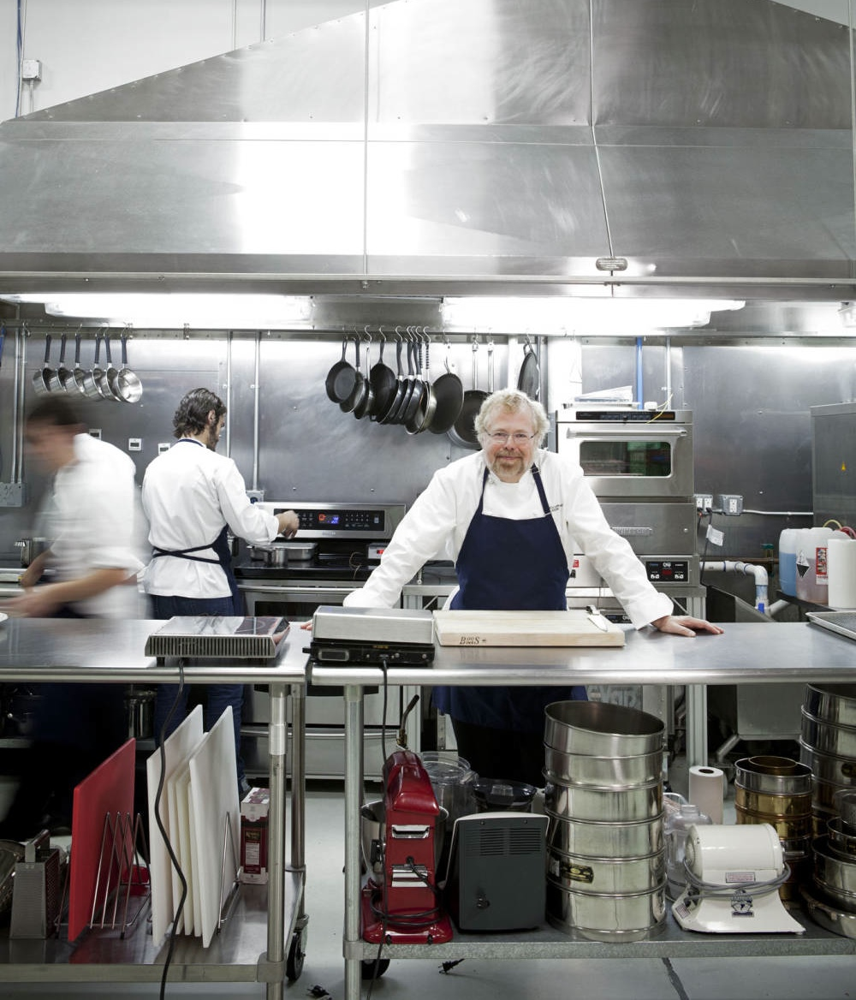

Jeff Byrnes & Eric Herot of EverTrue
Brought to you by Jeff Byrnes & Eric Herot of EverTrue
Really, it’s all about the bragging rights.
gem 'berkshelf', '~> 3.1'
gem 'chefspec', '~> 4.0'
gem 'foodcritic', '~> 3.0'
gem 'test-kitchen', '~> 1.2'
gem 'kitchen-vagrant', '~> 0.14'
gem 'kitchen-ec2', github: 'test-kitchen/kitchen-ec2'
require 'spec_helper'
describe 'et_travis_demo::default' do
let(:chef_run) { ChefSpec::Runner.new.converge(described_recipe) }
it 'creates the file /tmp/travis_lives' do
expect(chef_run).to create_file '/tmp/travis_lives
end
end